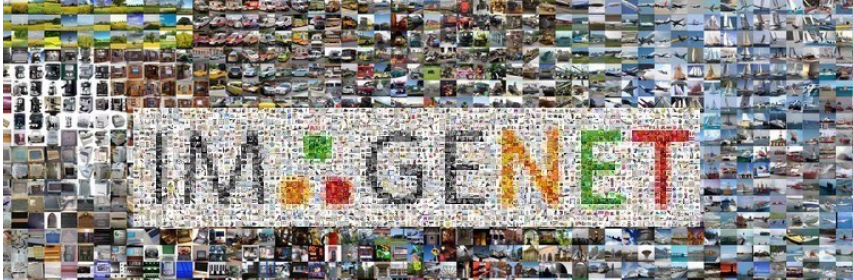
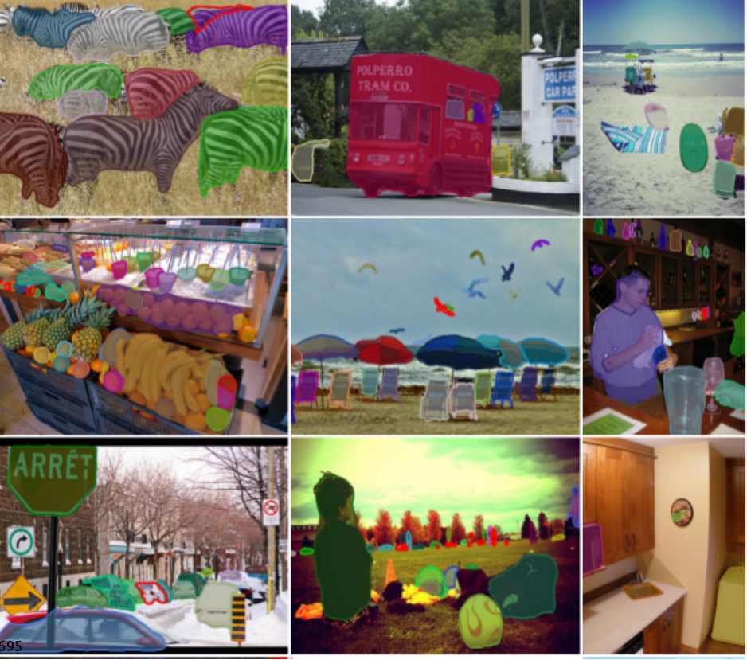
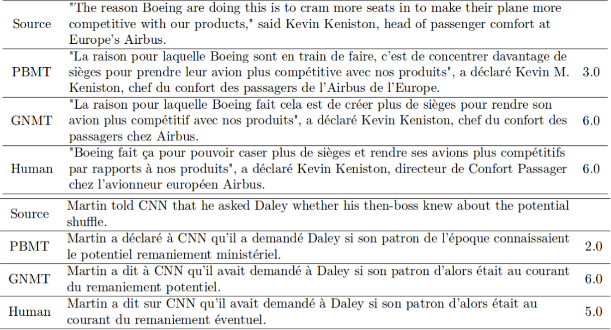
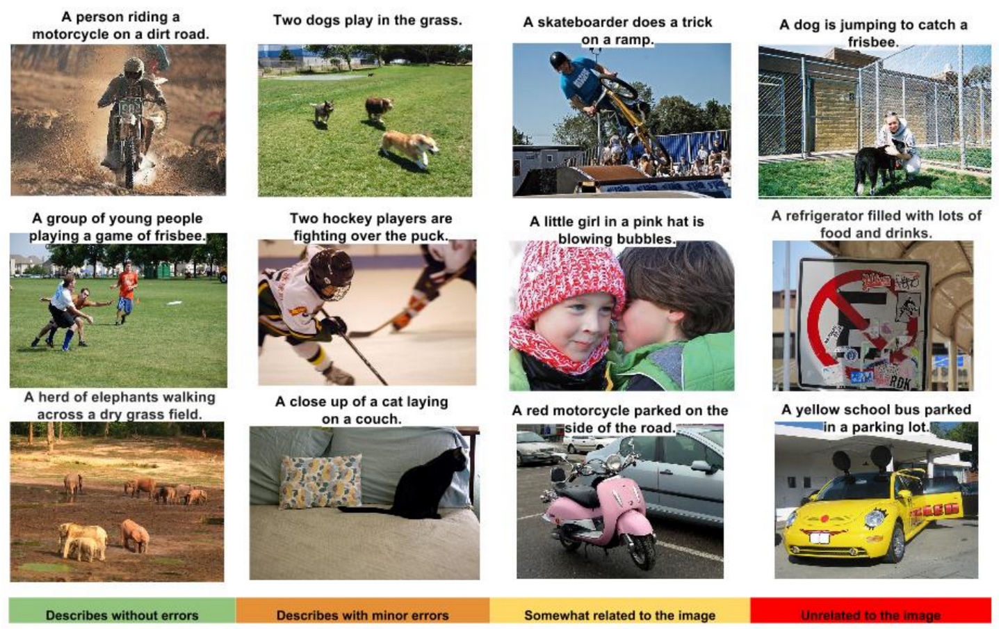
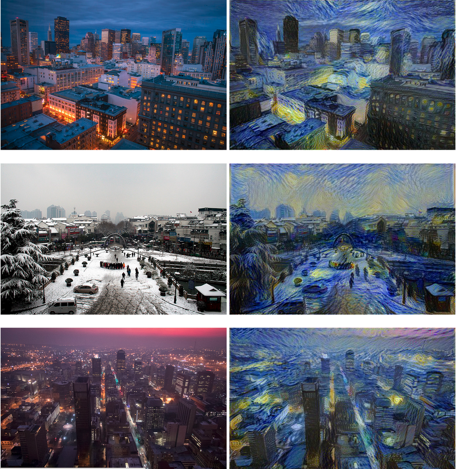
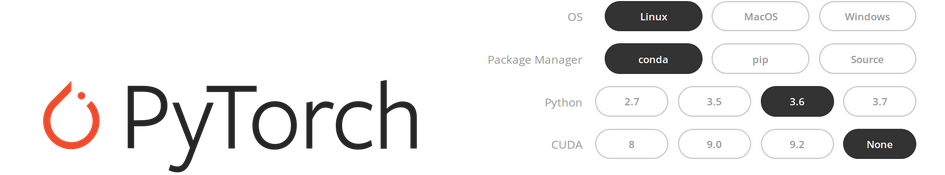

class: center, middle # Lecture 1: ### Introduction to Deep Learning ### ... and your setup! .red[Marc Lelarge<sup>*</sup>] <br/> Andrei Bursuc <br/> Alexandre Defossez <br/> Alexandre Sablayrolles <br/> Pierre Stock <br/> Neil Zeghidour .red[*] contact in case of emergency... --- # Goal of the class ## Overview - When and where to use DL - "How" it works - Frontiers of DL -- ## Deep Learning .red[Do It Yourself!] - Fast evolving field with a lot of ressources available online - Use a neural network right away, get results and then understand it! - .red[This course requires your active participation] --- # If you are (already!) lost - Course website: <br> <http://www.dataflowr.com> - Course GitHub: <br> <https://github.com/mlelarge/dataflowr> - Course forum: <br> <https://moodle.di.ens.fr/mod/forum/view.php?id=164> - If you are still lost, email: <br> marc dot lelarge at ens dot fr --- # What is Deep Learning ### Typical ML system .center[ <img src="images/image_ml.png" style="width: 670px;" /> ] .credit[Slide credit: O. Grisel and C. Ollion] --- # What is Deep Learning ### Typical ML system .center[ <img src="images/image_ml_2.png" style="width: 670px;" /> ] .credit[Slide credit: O. Grisel and C. Ollion] --- # What is Deep Learning ### Deep Learning system .center[ <img src="images/image_dl.png" style="width: 700px;" /> ] .credit[Slide credit: O. Grisel and C. Ollion] --- # Why Deep Learning Now? - Five decades of research in machine learning - .grey[CPUs/GPUs/storage developed for other purposes] - .grey[lots of data from “the internet”] - .grey[tools and culture of collaborative and reproducible science] - .grey[resources and efforts from large corporations] --- # Why Deep Learning Now? - Five decades of research in machine learning - CPUs/GPUs/storage developed for other purposes - .grey[lots of data from “the internet”] - .grey[tools and culture of collaborative and reproducible science] - .grey[resources and efforts from large corporations] .center[ <img src="images/gpu_tpu.png" style="width: 450px;" /><br/><br/> <small>_GPU and TPU_</small> ] --- # Why Deep Learning Now? - Five decades of research in machine learning - CPUs/GPUs/storage developed for other purposes - lots of data from “the internet” - .grey[tools and culture of collaborative and reproducible science] - .grey[resources and efforts from large corporations] .center[  ] --- # Why Deep Learning Now? - Five decades of research in machine learning - CPUs/GPUs/storage developed for other purposes - lots of data from “the internet” - tools and culture of collaborative and reproducible science - resources and efforts from large corporations .center[ <img src="images/frameworks.png" style="width: 500px;" /><br/><br/> ] --- # DL Today: Vision ###Object detection and segmentation .center[  ] .credit[Pinheiro et al., arXiv:1603.08695] --- # DL Today: Vision for control <div style="text-align:center;margin-bottom:30px"> <iframe width="560" height="315" src="https://www.youtube.com/embed/umRdt3zGgpU?rel=0&showinfo=0" frameborder="0" allow="autoplay; encrypted-media" style="max-width:100%" allowfullscreen=""> </iframe> <br/>Quadcopter Navigation in the Forest <br/>Giusti et al, http://rpg.ifi.uzh.ch/docs/RAL16_Giusti.pdf </div> --- # DL Today: NLP, translation .center[  <br/>Wu et al., arXiv:1609.08144 ] --- # DL Today: NLP, question answering .center[ <img src="images/nlp2.png" style="width: 720px;" /> ] .credit[Slide credit: O. Grisel and C. Ollion] --- # DL Today: Auto-captioning .center[  <br/>Vinyals et al., arXiv:1411.4555 ] --- #DL Today: Speech-to-Text .center[ <img src="images/speech.png" style="width: 780px;" /> ] .credit[Slide credit: O. Grisel and C. Ollion] --- # DL Today: Style transfer .center[  <br/>Gatys et al., arXiv:1508.06576 ] .credit[from github.com/fzliu/style-transfer] --- # DL Today: Generative models .center[ <img src="images/nvidia_celeb.jpg" style="width: 350px;" /> <br/>Sampled celebrities [Nvidia 2017] ] -- <br/> .center[ <img src="images/stackgan.jpg" style="width: 600px;" /> <br/>StackGAN v2 [Zhang 2017] ] .credit[Slide credit: O. Grisel and C. Ollion] --- # DL Today: Generative models <div style="text-align:center;margin-bottom:30px"> <iframe width="560" height="315" src="https://www.youtube.com/embed/G5JT16flZwM?rel=0&showinfo=0" frameborder="0" allow="autoplay; encrypted-media" style="max-width:100%" allowfullscreen=""> </iframe> <br/>MusicVAE, Roberts et al. arXiv:1803.05428 </div> --- # DL for RL in games .center[ <img src="images/games.png" style="width: 650px;" /> ] -- <small> AlphaGo/Zero: Monte Carlo Tree Search, Deep Reinforcement Learning, self-play </small> .credit[Slide credit: O. Grisel and C. Ollion] --- # Do It Yourself starts now! ### Python and Jupyter notebook .center[ <br/>https://www.anaconda.com/download/ (Python 3.6 version) ] -- ### Pytorch .center[  <br/>https://pytorch.org/ ] -- ### Access to a GPU .center[ <br/>https://aws.amazon.com/education/awseducate/ ] --- # And now a first example!